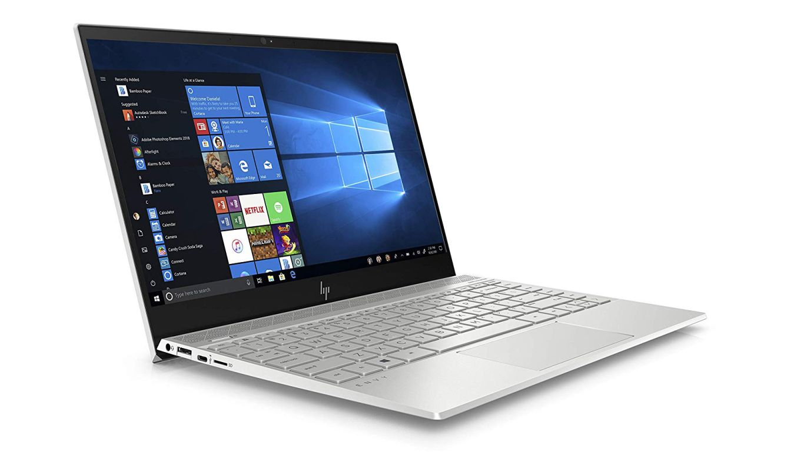

Best laptop 2020: the best laptops available
today
When it comes to picking the very best laptops of 2020, this is the only guide you need:
the constantly updated, expertly curated, definitive T3 list of the best laptops for working,
gaming, designing, studying or anything else.
We've acknowledged that the best laptop might be different for everyone, so we've tried to cover
as a wide a selection of system types, prices and designs as possible – no matter what your needs,
you should find something that fits here.
Laptop discounts continue to pop up at leading retailers like Amazon
and Walmart, so if you do your
research you may not have to spend as much money as you thought... and finding your way to this guide is a very good start.
No matter if you're looking for a flexible 2-in-1 hybrid, or a high-performance gaming laptop,
or a bargain system at the budget end, a great business laptop or the best sub-£1,000 laptop, we hereby present the best laptops on the market today.
- Best lightweight laptops
- Best student laptops
- Best gaming laptops
- Best 2-in-1 laptops
With so many laptop makers producing so many quality computers at the moment, picking a machine that's right for you
– and at a good price point – can be quite a challenge, though. Long lists of tech spec jargon and indecipherable
numbering systems don't help much either.
THE BEST LAPTOPS YOU CAN BUY TODAY
The Dell XPS 13 is a fantastic all-round system. That's why it sits at the top of the best laptop table.
1. DELL XPS 13 (2019)
Simply put, the best laptop in the world
| SPECIFICATIONS |
CPU: 1.8GHz Intel Core i7-8550U (quad-core, 8MB cache, up to 4.0GHz) |
| |
Graphics: Intel HD Graphics 620 RAM: 16GB DDR3 (2,133MHz)
|
| |
Screen: 13.3-inch, Ultra HD (3,840 x 2,160) UltraSharp InfinityEdge touch display
|
| |
Storage: 1TB PCIe SSD
|
| |
|
| REASONS TO BUY |
- It's beautiful
- It's really quick
- It's got a 4K screen
|
| TODAY'S BEST DEALS |
US€ 1,338.99 
|
The mighty Dell XPS 13 is a frequent member of our best laptop buying guides and here it's business as usual. The most recent model moves the webcam back to a more sensible spot above the screen.
The machine is thinner and more powerful than ever before, and – screen aficionados rejoice – comes rocking a luxe 4K screen too. The almost bezel-less new design is also absolutely lovely,
which squeezes a 13.3-inch screen into an 11-inch frame, and the wide selection of ports is right on the money too.
It's expensive, and the stunning Alpine White model is even more so, but it is simply one of the best laptops in the world and an easy recommend for the vast majority of users.
The Microsoft Surface Book 2 is a great 2-in-1 laptop, and powerful contender to the best laptop throne.
2. MICROSOFT SURFACE BOOK 2
The ultimate Windows 10 hybrid laptop for power users
| SPECIFICATIONS |
CPU: 1.9GHz Intel Core i7-8650U (quad-core, 8MB cache, up to 4.2GHz with Turbo Boost) |
| |
Graphics: Intel UHD Graphics 620; Nvidia GeForce GTX 1060 (6GB GDDR5 VRAM)
RAM: 16GB LPDDR3 (1866Mhz)
|
| |
Screen: 15-inch, 3,240 x 2,160 (260 ppi) PixelSense display (3:2 aspect ratio; 1600:1 contrast ratio)
|
| |
Storage: 512 GB PCIe 3.0 SSD
|
| |
|
| REASONS TO BUY |
- Massively powerful for a 2-in-1
- Battery life is excellent
- Screen is superb
|
| TODAY'S BEST DEALS |
US€ 1,563.59
|
Microsoft's Surface Book 2 is a 2-in-1 laptop, with a screen that can be detached and used as a tablet, but don't let that fool you – this is a beast of a laptop full stop and a worthy top entry in our best laptop buying guide.
Not only is its power unmatched in the 2-in-1 sector, but with a powerful Intel Core i7-8650U processor, Nvidia GeForce GTX 1060 GPU, and stunning 15-inch 3,240 x 2,160 pixel display, it is more than a match for any laptop in this buying guide.
It's expensive though – very expensive – and you can get a similar spec for less elsewhere if you sacrifice the ability to detach the screen. However, if you have the budget then this laptop delivers a fantastically powerful and versatile computing experience.
The MacBook Pro 16-inch is the best laptop from Apple on the market today.
3. APPLE MACBOOK PRO 16-INCH
The best laptop for Apple MacBook users
| SPECIFICATIONS |
CPU: 2.6GHz six-core Intel Core i7 |
| |
Graphics: AMD 5300M 4GB RAM: 16GB of 2666MHz DDR4 RAM
|
| |
Screen: 16-inch, 3072x1920Storage
|
| |
Storage: 512 GB PCIe 3.0 SSD
|
| |
|
| REASONS TO BUY |
- Big, sharp
- accurate 16-inch display
- Plenty of power
- New keyboard
-
|
| TODAY'S BEST DEALS |
US€ 2,199
|
This is the best Apple MacBook on the market today and, for those looking to upgrade to a premium macOS device, the best laptop on the market today.
As you would expect from a high-end Apple laptop, the MacBook Pro 16-inch is supremely slick and powerful, built with a best-in-class fit and finish, and loaded with a brand new keyboard, which is leaps and bounds better than previous incarnations.
The fact the system runs the very latest version of macOS, Catalina, which delivers a plethora of of exclusive, quality apps, and that it is supported by Apple's first-rate support network for if anything goes wrong, really does add a layer of sheen that many competing Windows 10 machines do not.
On raw specs alone the MacBook Pro 16-inch is pipped to the post slightly by the Dell XPS 15, which can be outfitted with a 4K OLED screen, 32GB of RAM, 1TB of storage, and a more powerful Nvidia GPU, but it is the overall package and usage experience where the MacBook Pro shines.
A no-brainer upgrade for anyone looking for a new, high-end laptop from Apple.

The HP Envy 13 delivers a great all-round system with some premium-tier features
4. HP ENVY 13
A fantastic all-round laptop that delivers premium features at a modest price
| SPECIFICATIONS |
CPU: Intel Core i7-10510U Quad Core Processor (8MB Cache, 1.8GHz-4.9GHz) 15W |
| |
Graphics: NVIDIA GeForce MX250 RAM: 16GB DDR4 2666MHz
|
| |
Screen: 13.3" Full HD IPS Touch Display (1920 x 1080)
|
| |
Storage: 512GB NVMe Solid State Drive
|
| |
|
| REASONS TO BUY |
- Great performance for an ultra-light laptop
- High-quality audio design
- Camera kill switch
|
| TODAY'S BEST DEALS |
US€ 1,019.99
|
The HP Envy 13 contains the same 8th-gen Intel Core i7 processor seen in many other systems in this guide, but doubles down with 16GB of RAM and graphics handled by the Nvidia GeForce MX250,
utilising an extra 2GB of dedicated video memory. It doesn’t lose out in the pricing stakes, either, costing only a little over a thousand pounds for excellent performance.
With some decent security features such as a fingerprint scanner and a physical webcam kill switch on the side of the machine, it’s a great laptop for general work, whether that’s spreadsheets or image manipulation.
It’s also equipped with audio tech from Bang and Olufsen, along with HP’s own Audio Boost technology, meaning that the sound is as clear as a bell.
The trackpad feels a little flimsy but the backlit keyboard is solid and feels nice to use. The integrated USB Type-A ports are a bit tricky to use due to their snap-open design, but it’s a welcome sight
to see regular USB compatibility on an ultralight laptop. The 1080p screen is clear and high-quality, with a little ridge at the base that pushes the lower half of the laptop up at a slight angle when opened on a flat surface, to make typing that little bit easier.